USER 01
スポーツブランド
新しいグラフィック案やブランドロゴの配置を、球面上の見え方と合わせて検討・意思決定できます。
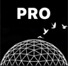
fullcolorballs simulator PRO EDITION originalsoccerball.comボールのデザイン検討と製版を、平面と立体の両側から。
2Dグラフィックソフト上だけで作業していると、実際に球体に縫製された際の歪みや、パネル境界をまたぐ絵柄の連続性を事前に把握することは困難です。PRO EDITION は、視覚的な共通画面を通じて仕上がりイメージを具体化します。
新しいグラフィック案やブランドロゴの配置を、球面上の見え方と合わせて検討・意思決定できます。
デザイン案の確認や社内共有に向け、平面と立体の両面から情報を整理し、レビューを効率化します。
クライアントへの提案段階で、平面展開図と立体イメージを同時に提示し、合意形成を迅速化します。
記念品やコラボレーションボールの意図せぬ欠損・トリミングミスを印刷工程前に防止します。
手元のタブレット実機で実際のアプリ画面を操作し、チームやクライアントと2D展開図・3D球体をその場で共有・検討可能。
アプリの実際の操作画面です。左画面で展開図上の配置や寸法を確認し、右画面で球体としての見え方を確かめます。
ノートパソコン実機での2D花弁展開図と3D球体のリアルタイム連動操作環境。
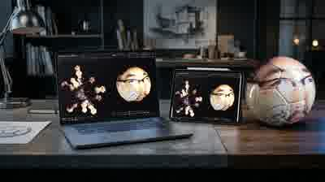
例えばMacBook Proでの全体設計・iPadでの単一パネル精査・実製作ボール現物の照合をシームレスに行うスタジオ環境。
画像の配置やパネル境界を平面で確認。『実測メジャー』で2点間の実寸距離（mm）をドラッグ測定可能。『Wire』表示やズームを完備。
球面上での見え方を確認。トラックボール360°操作、自動『回転』、『左右調整』『上下調整』『角度調整』による精密位置決めに適合。
外接球『直径 (mm)』と出力解像度『DPI』の設定。設定値に応じて展開図総寸法や正五角形・正六角形の1辺長aがリアルタイム自動連動。
展開図実寸（W / H / 辺長a / カーソル座標 / 実測mm）を常時表示。3D側では各軸角度と最大3件の『履歴保存』『初期化』を完備。
3D球体を見ながら『左右調整』『上下調整』『角度調整』の各モードでテクスチャ配置を微小値で追い込めます。
トラックボールによる全方位ドラッグ回転や『回転』（自動回転）を完備。試行錯誤した配置座標・回転クォータニオン・直径設定はタイムスタンプ付きで最大3スロットへ履歴保存され、即座の呼び出しや『初期化』が行えます。
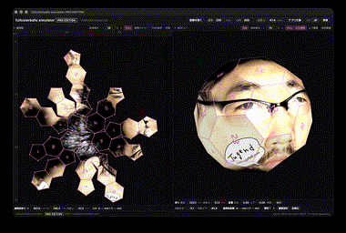
外接球の直径（mm）および出力解像度（DPI）、キャンバス背景色（黒／白）を作業条件に合わせて画面上で設定可能。
外接球面直径の変更に連動して展開図の総寸法や正五角形・正六角形の1辺長a（px/mm）が自動算出されます。ボールサイズや入稿規格に応じたコントロールが可能。通常のダークモードの他に清刷対応型白背景モードもワンクリックで行えます。
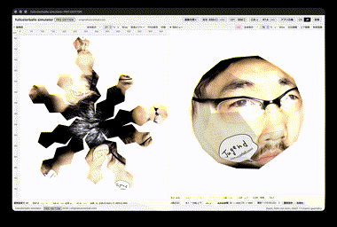
展開図上の任意の面を直接クリックするだけで、モーダルを挟まずその場で実寸ビューへシームレス切り替え。
独立したポップアップ画面ではなく、展開図エリア自体がインプレースで単一パネル実寸ビューに遷移します。パネル外側をクリックすれば全体展開図へ復帰。[←][→]キーで面番号（#1〜#32）を連続巡回可能です。
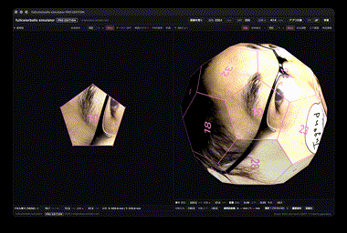
ボール製造時の縫製・接合に必要な外周マージン領域へ、隣接面のテクスチャを幾何計算で自動ブリード描画。
単一パネル表示時、外側マージン幅をミリ単位で自由に入力・調整可能。球体上で隣り合うパネルの絵柄を幾何計算により自動的に外側マージン領域へシームレス延長補完（ブリード描画）し、意匠境界と裁断境界を2重ワイヤーで可視化・出力します。
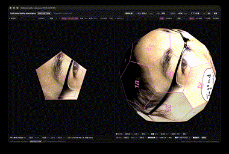
全パネルは内蔵ZIPエンコーダーによりPNGとして1つのZIPファイルにパッケージ化。
外部ライブラリに依存しないZIPエンコーダーを搭載。一括ZIPを選択するだけで、全パネルの透過PNG（指定DPI・マージン任意）を生成・ダウンロード。ブラウザ原寸印刷にも対応しています。
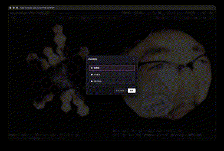
素材の取り込みから配置微調整、実測検証、パネル精査、一括製版出力に至る実践的な作業手順。
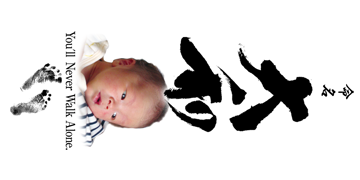
『画像を開く』またはドラッグ＆ドロップで画像を取り込み。展開図と3D球体へ即座にマッピング。
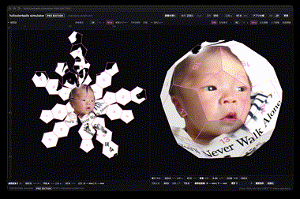
『直径』『DPI』を入力し、『左右調整』『上下調整』『角度調整』で配置を追い込み。『履歴保存』で記録。
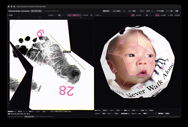
『実測メジャー』を起動し、展開図上の任意2点間をドラッグして実寸ミリメートル距離（mm）を直接測定。
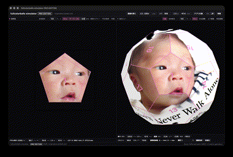
面を直接叩いてインプレース表示。任意指定したマージン幅と隣接面自動補完を2重ワイヤーで精査。
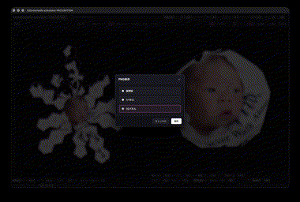
『PNG保存』から「32パネル」を選択し、全32面の透過PNG一括ZIPをDPIメタデータ付きで製版出力。
アプリの機能と、印刷・製造サービスの提供範囲を明確に区別して運用します。
画面上での展開図・3D球体のリアルタイム連動、全体の座標調整、寸法・DPIの連動設定、展開図直接クリックによる単一パネル実寸インプレース検証、マージン幅の任意指定と隣接面シームレス自動補完、展開図2点間の実測メジャー測定、および全パネル一括ZIP／単一パネル／展開図の解像度メタデータ付きPNG書き出し。
本アプリはボールデザインの設計検討・製版データ準備を支援するソフトウェアであり、特定の印刷機へのICCプロファイル適合、パネル素材の伸縮、裁断刃のブレや縫製張力による物理誤差は利用者の各製造現場の仕様・環境に準じ、一切の責任を負いません。
製造現場やミーティングの移動中でも、スマートフォン端末でのモバイルレビューと確認が可能。
fullcolorballs simulator PRO EDITION に関するご質問は、公式サイトのお問合せフォームより承っております。
※PRO EDITIONはエンタープライズ用です。個人の方へはFREE EDITIONをweb公開しております